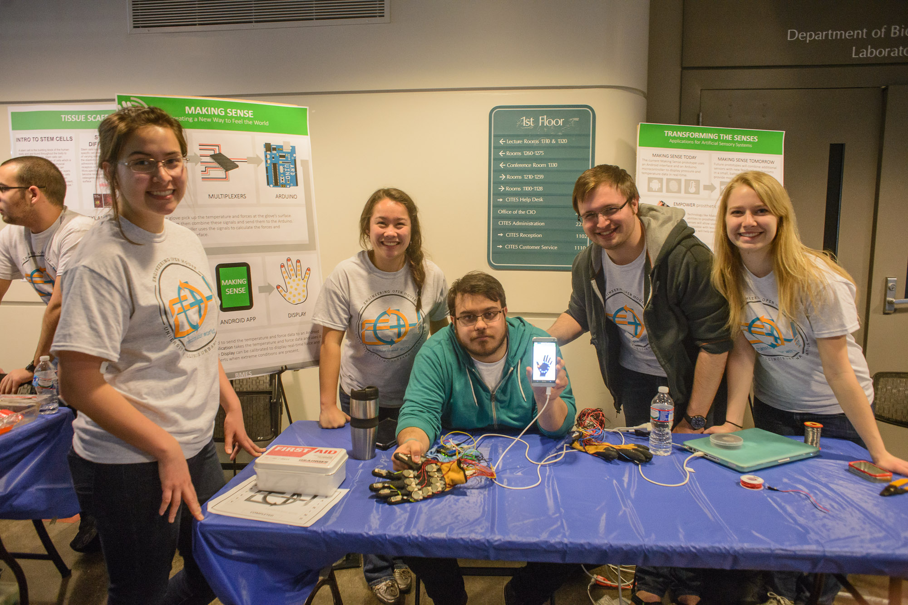
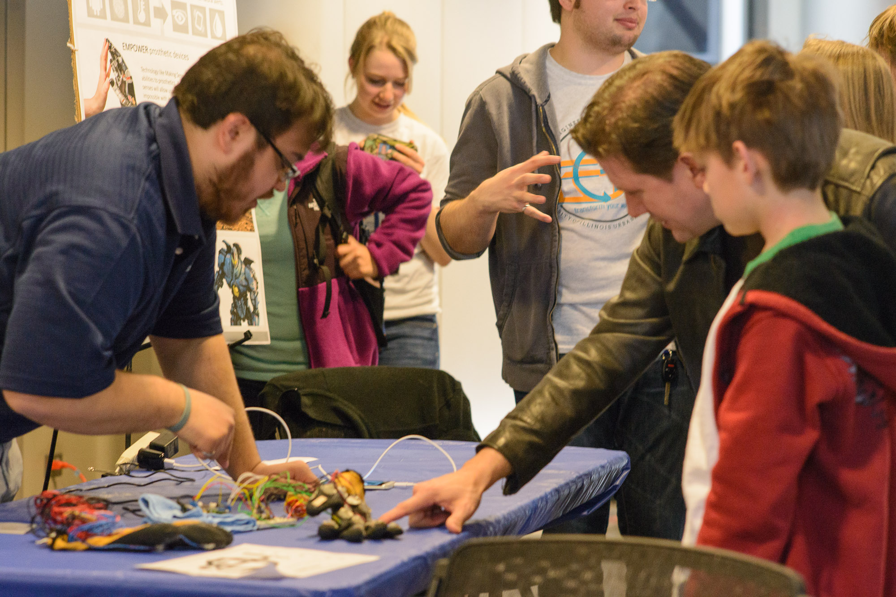
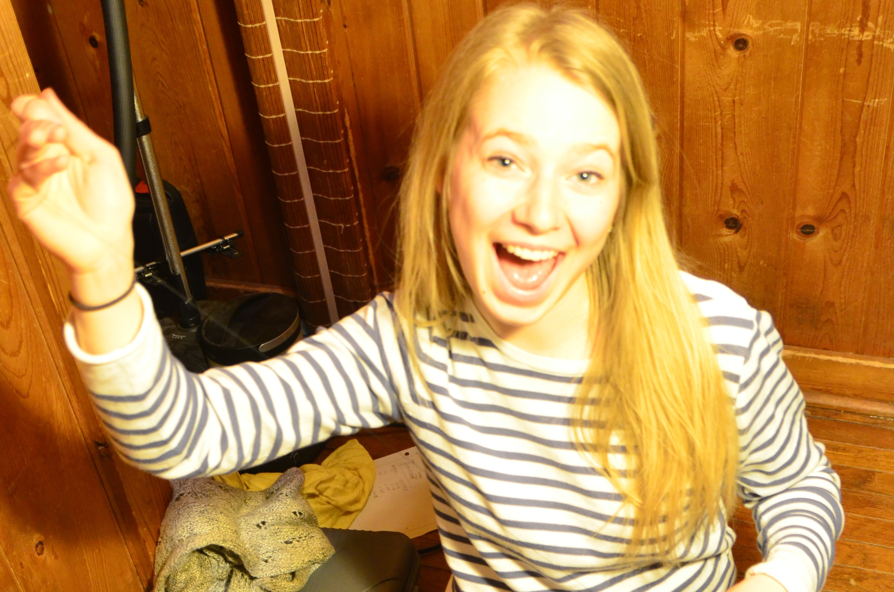
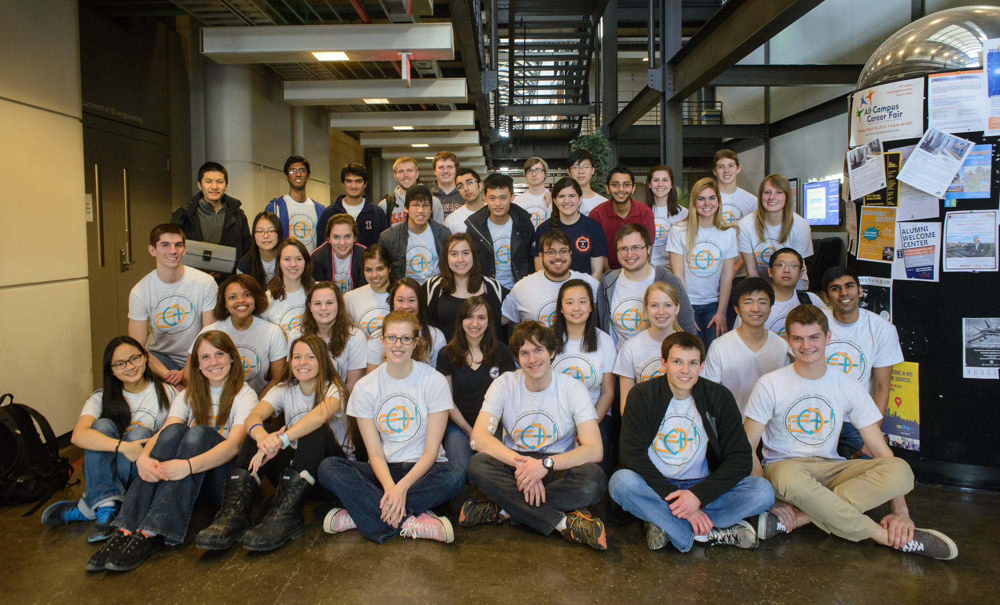
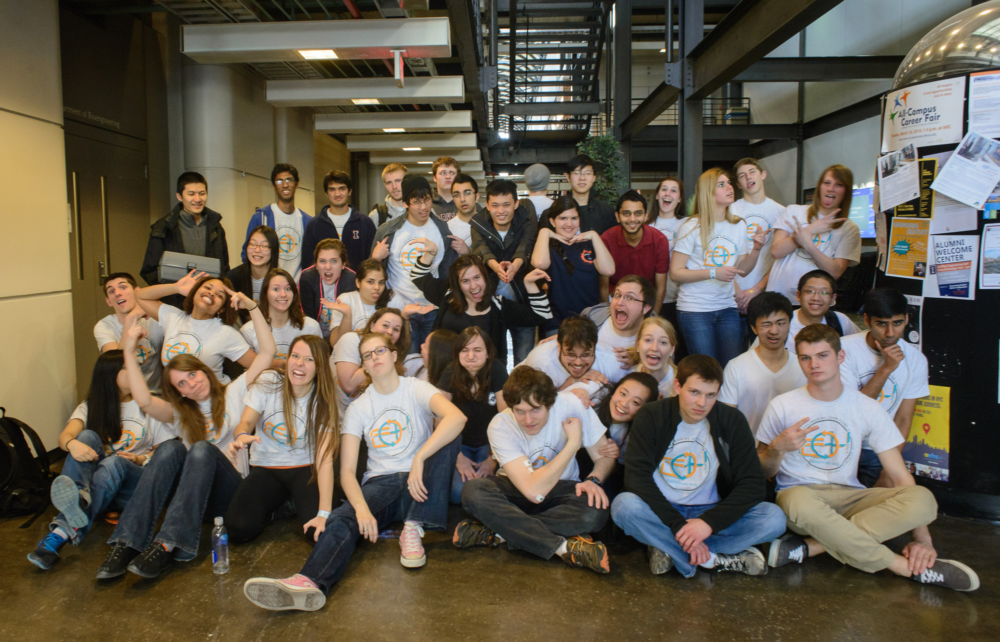

Making Sense









Making Sense was a BMES EOH 2014 project at UIUC, working towards creating surrounding aware prosthetics. The code base consisted of an Android app written in the Protocoder framework and Arduino code running with a bluetooth shield. The hardware consisted o two gloves; one outfitted with pressure sensors, the other with temperature sensors. The software is available on Github, and is maintained by Kashev Dalmia. Hardware design was by Isaac Dupree and Kashev Dalmia
The Team
- Isaac Dupree - Team Leader, Hardware Design
- Kashev Dalmia - Software, Hardware Design
- Rebecca Ficht - Hardware, Presentation, Sewing
- Mallory Schroeder - Hardware, Presentation, Sewing
- Parth Shah - Hardware, Assembly, Presentation
- Faith Bradley - Hardware, Logistics
- Special Thanks to Brady Salz - Hardware Consultant